238 — Cloud Operations, Trace y OpenTelemetry
Parte: 19 — Google Cloud: arquitectura de datos y operación en producción
Nivel: avanzado · Horas estimadas: 4
Laboratorio: observability · Estado: EXECUTABLE_CORE
🎯 Propósito
Montar la observabilidad de Google Cloud, donde los registros de auditoría son la pieza distintiva y a la vez la que más coste y más sorpresas produce: el registro de acceso a datos está desactivado por defecto, y activarlo sin acotar dispara la factura. La clase cubre el enrutado y los filtros de exclusión, la instrumentación estándar, los objetivos de nivel de servicio como recurso declarado, y las alertas que este programa exige siempre.
📚 Resultados de aprendizaje
Al finalizar podrás:
- Enrutar registros con filtros de inclusión y exclusión, y controlar su coste.
- Decidir qué registros de auditoría activar y sobre qué servicios.
- Instrumentar con el estándar abierto para no quedar atado.
- Declarar objetivos de nivel de servicio y alertar por ritmo de consumo.
- Correlacionar desde la alerta hasta la causa sin eslabones rotos.
🧩 Conceptos centrales
| Concepto | Comprensión verificable |
|---|---|
receptor de registros |
Regla que enruta registros a un destino: almacén de registros, almacenamiento, almacén analítico o mensajería. |
filtro de exclusión |
Regla que descarta registros antes de almacenarlos. La palanca de coste más directa. |
registro de auditoría de administración |
Quién creó, modificó o borró qué. Siempre activo y sin coste. |
registro de acceso a datos |
Quién leyó o escribió datos. Desactivado por defecto y muy voluminoso. |
objetivo de nivel de servicio |
Recurso declarado con su indicador, su objetivo y su presupuesto de error. |
alerta por ritmo de consumo |
Se dispara cuando el presupuesto de error se gasta demasiado rápido. La que debe despertar. |
🧠 Modelo mental
Google Cloud combina una jerarquía estricta de recursos con una red global y servicios data-first; proyecto, cuota e IAM forman una unidad operativa.
Aplicado a esta clase, separa siempre cuatro planos: intención (qué necesita el usuario), configuración (qué declaramos), estado observado (qué existe de verdad) y evidencia (cómo sabemos que cumple). Confundirlos produce diseños que se ven correctos en un diagrama pero fallan al operar.
🗺️ Flujo de razonamiento

📖 Desarrollo
1. Enrutar y excluir
El modelo aquí es un enrutador: todo pasa por él y se decide qué va a dónde.
LOS DESTINOS
almacén de registros consultable, con retención
almacenamiento barato, para conservar por norma
almacén analítico para consultar mucho volumen
clase 236
mensajería para procesar en tiempo real
Y EL RECEPTOR
un filtro decide qué se envía a cada destino
→ y se pueden crear en la organización, para que apliquen
a todos los proyectos clase 229
Los filtros de exclusión, que son la palanca de coste más directa:
se descartan ANTES de almacenar y no se pagan
lo que casi siempre se excluye
comprobaciones de salud del balanceador
peticiones correctas de servicios muy hablados, con
muestreo parcial
registros de nivel de información de componentes ruidosos
y las lecturas de metadatos de los agentes
y con MUESTREO
«excluye el 95 % de las peticiones con código 200»
→ conserva una muestra y descarta el resto
→ y hay que tenerlo en cuenta al contar clase 225
Y el receptor a la organización, que resuelve un problema de gobierno:
un receptor en la organización envía los registros de
AUDITORÍA de todos los proyectos a un destino centralizado
en un proyecto de seguridad
al que los equipos NO tienen acceso de escritura ni de
borrado
→ y eso es lo que hace la auditoría creíble clase 141
→ sin ello, quien compromete un proyecto borra sus huellas
Y la retención, por destino:
almacén de registros de aplicación 30 días
almacén de auditoría 400 días
almacenamiento para conservación lo que exija la
norma
→ y hay que fijarla: los valores por defecto no
corresponden a nada ley 26
2. Los registros de auditoría
Esta es la pieza distintiva y la que hay que entender antes de activarla.
ADMINISTRACIÓN
quién creó, modificó o borró un recurso
SIEMPRE activo y sin coste
→ y es el que responde «¿quién cambió esto?»
ACCESO A DATOS
quién leyó o escribió datos
DESACTIVADO por defecto, salvo unos pocos ley 26
→ y es el que responde «¿quién leyó esta tabla?»
→ es decir, el que hace falta para investigar una fuga
y su volumen
cada lectura de cada objeto genera una entrada
→ en un almacén con mucho tráfico, es enorme
→ activarlo en todos los servicios dispara la factura
EVENTOS DE SISTEMA
acciones que hace la propia plataforma
siempre activo
DENEGACIÓN DE POLÍTICA
intentos rechazados por una política
→ muy útil y de poco volumen
Y la decisión que hay que tomar servicio por servicio:
¿ACTIVAR ACCESO A DATOS AQUÍ?
sí donde hay datos sensibles: almacenes con datos
personales, conjuntos analíticos, gestor de secretos
sí en el gestor de claves, siempre
no en almacenes de artefactos, registros y datos
públicos
y dentro de los activados
distinguir LECTURA de ESCRITURA
la escritura es poco voluminosa y muy valiosa
la lectura es lo que dispara el volumen
→ activar escritura en muchos, lectura en pocos
y excluir las identidades que generan ruido
los propios agentes, los procesos de copia
→ con una exclusión, no desactivando el servicio entero
Y la comprobación de que sirve:
«¿quién leyó la tabla de clientes en las últimas 24 h?»
→ si no se puede contestar, el registro de acceso a datos
no está donde hace falta
→ y esa pregunta llega el día de un incidente, no antes
clase 226
Y el acceso a los propios registros:
quien puede leer los registros de auditoría ve mucho
→ acceso restringido y auditado
→ y quien puede BORRARLOS o cambiar el enrutado, menos
aún
→ con política de organización que lo impida clase 229
3. Instrumentar y declarar objetivos
La instrumentación, con la decisión de la clase 225:
ESTÁNDAR ABIERTO
trazas, métricas y registros con la API común
el destino es configuración
→ cambiar de proveedor de análisis no toca el código
→ y la misma instrumentación vale en las tres nubes
clase 158
y aquí hay un detalle a favor
los servicios gestionados ya emiten trazas y métricas
→ y el contexto se propaga si la aplicación lo respeta
→ una petición que cruza balanceador, servicio de
contenedores y base aparece como una sola traza
Y lo que hay que cuidar, que es lo de siempre:
el contexto de traza viaja también por la mensajería
→ dentro del mensaje clase 237
dimensiones de baja cardinalidad clase 211
registros estructurados con traza, servicio, versión y
entorno
y sin secretos ni datos personales completos
Los objetivos de nivel de servicio, que aquí son un recurso declarado:
se declara
el SERVICIO
el INDICADOR: disponibilidad o latencia, con su fuente
el OBJETIVO: 99,5 % en 28 días
→ y la plataforma calcula el presupuesto de error y su
consumo
y se puede declarar como código, junto al servicio
clase 232
Y LA ALERTA QUE IMPORTA
por RITMO DE CONSUMO del presupuesto
«se está gastando 14 veces más rápido de lo normal»
→ esa es la que despierta clase 211
→ y no «hubo un error»
con dos ventanas
corta, para lo que arde
larga, para la degradación lenta
Y la disciplina que este programa exige:
el objetivo se define por FLUJO DE USUARIO, no por
componente clase 123
«el 99,5 % de las confirmaciones de pedido en menos de
800 ms, medidas en el borde»
→ y medido donde el usuario lo sufre clase 126
Y las alertas que faltan siempre:
POR AUSENCIA
«este trabajo no se ha ejecutado en N minutos»
→ un trabajo programado que deja de dispararse no genera
error ley 13
POR ANTIGÜEDAD
mensajes sin confirmar, temas de fallidos, sincronización
certificados, retraso de replicación
clases 237, 234, 235
Y POR NEGOCIO
«pedidos confirmados por minuto por debajo del mínimo»
→ detecta lo que ninguna métrica técnica ve ley 15
4. Consultar, correlacionar y pagar
Las consultas preparadas, que ahorran minutos durante un incidente:
«todo lo de esta traza»
«errores de este servicio en la última hora, por tipo»
«qué cambió en los recursos en la última hora»
→ del registro de auditoría de administración
«quién accedió a estos datos»
→ del registro de acceso a datos
«peticiones más lentas y qué tramo domina»
→ guardadas y enlazadas desde el procedimiento de la
alerta clase 127
La cadena de diagnóstico, con el eslabón que aquí es directo:
alerta por ritmo de consumo del presupuesto
→ panel del servicio
→ trazas del periodo
→ registros de esas trazas
→ REGISTRO DE AUDITORÍA: ¿qué se cambió?
→ y ese último eslabón es el que suele faltar en otras
plataformas y aquí está siempre activo y gratis
Y el perfilado, que resuelve una categoría de problemas:
el perfilador continuo muestra dónde se va el tiempo y la
memoria en producción, con muestreo y coste bajo
→ y resuelve las preguntas que ni las trazas ni los
registros contestan: «¿por qué esta función consume el
40 % de la CPU?»
→ conviene tenerlo activo antes de necesitarlo
El coste, con las palancas:
1 FILTROS DE EXCLUSIÓN ← la mayor
2 activar acceso a datos solo donde hace falta
3 retención por almacén, no global
4 destino según uso: consultable, barato o analítico
5 muestreo en la aplicación
6 y dimensiones de baja cardinalidad
y la revisión trimestral
¿cuánto cuesta la observabilidad frente al cómputo?
→ en la clase 211 costaba el doble
→ y aquí, con acceso a datos mal acotado, puede costar
más clase 239
Y la lista de comprobación de la clase:
☐ hay receptor en la organización para los registros de
auditoría
☐ el destino de auditoría está en un proyecto sin acceso de
escritura desde producción
☐ hay filtros de exclusión para lo ruidoso
☐ el acceso a datos está activado donde hay datos
sensibles, y solo ahí
☐ se distingue lectura de escritura al activarlo
☐ la retención está fijada por almacén
☐ el acceso a los registros está restringido y auditado
☐ una política impide cambiar el enrutado de auditoría
☐ la instrumentación de las aplicaciones es estándar
☐ el contexto de traza viaja por la mensajería
☐ hay objetivos declarados por flujo de usuario
☐ hay alerta por ritmo de consumo, con dos ventanas
☐ hay alertas por ausencia, por antigüedad y de negocio
☐ las consultas de diagnóstico están guardadas
☐ el perfilador continuo está activo
☐ se puede contestar quién leyó unos datos concretos
Y el cierre que enlaza con la clase siguiente: con la observabilidad en pie, quedan la seguridad operativa y el coste, que aquí tienen herramientas propias y un mecanismo de perímetro que ya ha aparecido varias veces. Es la materia de la clase 239.
🔬 Ejemplo trabajado
CloudShop monta la observabilidad de su organización en Google Cloud. Lo que sigue es la activación del acceso a datos que multiplicó la factura por seis, la pregunta que no se podía contestar durante un incidente, y los objetivos declarados que sustituyeron a 71 alertas técnicas.
El punto de partida:
coste mensual de observabilidad 1.100 €
registros 740 €
métricas 240 €
trazas 120 €
registros de auditoría
de administración activos (gratis)
DE ACCESO A DATOS desactivados
destino el proyecto de cada equipo
→ cada equipo podía borrar sus propios registros de
auditoría clase 141
El incidente que reveló el hueco.
seguridad recibió un aviso: un correo de un cliente
aparecía en una lista de contactos de un tercero
la pregunta
«¿quién ha leído la tabla de clientes en los últimos 90
días?»
la respuesta
no se podía contestar
el registro de acceso a datos estaba desactivado
el de administración decía quién había concedido permisos,
no quién había leído
lo que se pudo hacer
reconstruir con los registros de consulta del almacén
analítico, que sí guardaban las consultas
→ 41 identidades habían consultado la tabla
→ y de ellas, 9 no debían tener acceso clase 236
tiempo de investigación 3 días
y la conclusión
la respuesta se obtuvo por casualidad, porque el almacén
analítico registra sus consultas
→ sobre el almacén de objetos no habría habido nada
La activación, y la factura.
primer intento
se activó el acceso a datos en TODOS los servicios, con
lectura y escritura
factura del mes siguiente
registros 740 € → 6.400 €
desglose
almacén de objetos, lecturas 4.100 €
→ cada descarga de una imagen del catálogo generaba
una entrada; 41 M al día
almacén analítico, lecturas 980 €
bases de datos, lecturas 710 €
resto 610 €
Y la corrección, servicio por servicio:
servicio lectura escritura motivo
almacén con datos de
clientes SÍ SÍ datos
personales
almacén de imágenes
del catálogo no SÍ público
almacén analítico SÍ SÍ datos
personales
gestor de secretos SÍ SÍ siempre
gestor de claves SÍ SÍ siempre
base de pedidos no SÍ volumen; y
el acceso va
por la API
almacén de artefactos no SÍ no sensible
registros no SÍ
y las exclusiones dentro de los activados
identidades de los agentes de copia
identidad del proceso de replicación
→ 61 % del volumen restante, excluido
registros 6.400 € → 1.180 €
Y la comprobación:
«¿quién ha leído la tabla de clientes en las últimas 24 h?»
→ contestada en 40 segundos
→ y esa consulta quedó guardada y enlazada desde el
procedimiento de incidente de datos clase 127
El destino centralizado:
receptor en la ORGANIZACIÓN
filtro: todos los registros de auditoría
destino: proyecto de seguridad
los equipos no tienen escritura ni borrado ahí
retención 400 días
y a partir de 90 días, a almacenamiento barato
y una política de organización
nadie puede modificar ni borrar los receptores de
auditoría de la organización clase 229
prueba negativa
intentar borrar el receptor desde un proyecto de
producción → denegado
intentar borrar registros del proyecto de seguridad
→ denegado
ley 22
Los filtros de exclusión:
volumen antes 1,9 TB/mes
exclusiones
comprobaciones de salud del balanceador -410 GB
peticiones 200 del servicio de catálogo,
muestreo del 3 % -620 GB
lecturas de metadatos de los agentes -180 GB
registros de nivel de información de 3
componentes ruidosos -240 GB
volumen después 450 GB/mes
Los objetivos, que sustituyeron a las alertas técnicas:
antes
alertas configuradas 98
disparadas al mes 740
accionables 61 (8 %)
la mayoría, umbrales técnicos: CPU, memoria, errores
después
objetivos declarados 6
confirmación de pedido: 99,5 % < 800 ms
listado de catálogo: 99,9 % < 400 ms
búsqueda: 99 % < 1 s
procesamiento de eventos: 99,5 % < 5 min de retraso
disponibilidad de la API pública: 99,8 %
y el flujo de pago: 99,9 %
alertas por ritmo de consumo 6
ventana corta (1 h) y larga (6 h)
alertas por ausencia 14
alertas por antigüedad 9
alertas de negocio 4
técnicas que sobrevivieron 12
─────────────────────────────────────────────────────
total 45
disparadas al mes 68
accionables 61 (90 %)
y las 71 técnicas retiradas
→ ninguna había detectado un problema que los objetivos
no detectaran antes
La prueba de las alertas:
condición provocada en las 45
no llegaron 7
4 por umbral mal puesto
2 por destino sin destinatarios
1 porque el objetivo estaba mal declarado: el
indicador medía en el servidor, no en el borde
clase 126, ley 22
El perfilador, que resolvió algo que las trazas no:
síntoma el servicio de búsqueda consumía el doble de CPU
que hacía tres meses, con el mismo tráfico
las trazas no mostraban ningún tramo lento
el perfilador continuo
el 41 % de la CPU en una función de normalización de
texto
→ un cambio de tres meses antes había añadido una
expresión regular compilada EN CADA LLAMADA
corrección compilar una vez
CPU -38 %
instancias necesarias 9 → 6
El resultado:
```text antes después coste de observabilidad 1.100 € 1.640 € (con auditoría de datos activada donde hace falta) frente a 6.400 € con todo activado volumen de registros 1,9 TB 450 GB «¿quién leyó estos datos?» incontestable 40 s registros de auditoría borrables por los equipos sí no alertas configuradas 98 45 accionables 61 (8 %) 61 (90 %) objetivos declarados 0 6 alertas que no llegaban n/d 0 (de 7 corregidas)
**La lección que esta clase deja**: activar el registro de acceso a datos **en todos los servicios multiplicó la factura por seis**, y acotarlo a donde hay datos sensibles la dejó en menos de la cuarta parte sin perder la capacidad que importaba. La pregunta que un incidente hizo —quién leyó una tabla— **no se podía contestar**, y solo se respondió por casualidad porque el almacén analítico registra sus consultas. Y setenta y una alertas técnicas se retiraron sin perder nada: **ninguna había detectado un problema antes que los objetivos**.
## 🧪 Laboratorio guiado
Ejecuta desde la raíz:
```bash
python classes/part-19-gcp-production-architecture/238-cloud-operations-trace-y-opentelemetry/lab.py
El laboratorio selecciona el motor de práctica observability y produce
lab_result.json. El escenario, sus comprobaciones y el artefacto esperado corresponden a
esta clase; no requiere credenciales y deja explícito qué debe revalidarse en un sandbox real.
- Lee
exercise.stepsy formula una predicción antes de ejecutar. - Ejecuta la práctica y verifica todos los elementos de
checks. - Provoca el caso de
negative_testy explica la señal observada. - Materializa
gcp-observabilityenevidence/usando la plantilla indicada. - Para proveedor real, sigue
sandbox.requires, registra costo y ejecutadestroy.
Evidencia esperada
El artefacto principal es telemetría correlacionada con una pregunta operativa. Además, la entrega debe incluir el comando ejecutado, la salida estructurada y una conclusión que no exceda lo observado.
🏆 Reto verificable
Construye gcp-observability para el caso CloudShop. Incluye una alternativa descartada,
un supuesto que pueda falsarse, una prueba de fallo y una decisión de rollback.
✅ Criterio de aceptación
- [ ]
lab.pytermina con código 0 y genera JSON válido. - [ ] La entrega conecta al menos tres requisitos con mecanismos verificables.
- [ ] Existe una prueba positiva y una prueba negativa con evidencia.
- [ ] Seguridad, costo y operación aparecen como decisiones, no como anexos.
- [ ] Se declara una limitación y una condición que obligaría a revisar el diseño.
- [ ] Otra persona puede repetir el recorrido sin conocimiento tácito.
⚠️ Errores frecuentes
| Síntoma | Causa probable | Corrección |
|---|---|---|
| No se puede saber quién leyó unos datos durante un incidente | El registro de acceso a datos está desactivado por defecto | Actívalo en los servicios con datos sensibles, distinguiendo lectura de escritura, y guarda la consulta que responde esa pregunta. |
| La factura de registros se multiplica al activar la auditoría de datos | Se activó la lectura en todos los servicios, incluidos los de mucho volumen y datos públicos | Acota por servicio, activa escritura en muchos y lectura en pocos, y excluye las identidades de agentes y procesos de copia. |
| Un equipo puede borrar los registros que lo incriminan | La auditoría se guarda en el proyecto del propio equipo | Receptor en la organización hacia un proyecto de seguridad sin escritura desde producción, y política que impida modificarlo. |
| Hay decenas de alertas y ninguna dice si el usuario está sufriendo | Son umbrales técnicos y no objetivos por flujo de usuario | Declara objetivos por flujo, alerta por ritmo de consumo del presupuesto y retira las técnicas que no aporten. |
| Un objetivo declarado no detecta un problema real | El indicador se mide en el servidor y no donde el usuario lo sufre | Mide en el borde y comprueba el objetivo provocando la condición. |
| Un servicio consume más CPU y las trazas no muestran nada | El coste está dentro del proceso, no en las llamadas | Activa el perfilador continuo antes de necesitarlo; muestra dónde se va el tiempo en producción. |
🛡️ Seguridad, ética y costo
Trabaja con cuentas propias o sandboxes autorizados. No publiques secretos, identificadores reales ni datos personales. Antes de crear recursos pagos define presupuesto, etiquetas y comando de destrucción; después verifica que no queden recursos huérfanos. Los ejemplos locales enseñan contratos, pero no certifican cumplimiento ni disponibilidad de producción.
❓ Preguntas de comprobación
- ¿Qué diferencia hay entre el registro de administración y el de acceso a datos?
- ¿Por qué el destino de la auditoría debe estar fuera del alcance de producción?
- ¿Cuál es la palanca de coste más directa en el enrutado de registros?
- ¿Qué alerta debe despertar a alguien y por qué no el error suelto?
- ¿Qué resuelve el perfilador continuo que no resuelven trazas ni registros?
🔗 Referencias
- Google Cloud (2025). Cloud Logging: routing and storage. https://cloud.google.com/logging/docs/routing/overview
- Google Cloud (2025). Cloud Audit Logs. https://cloud.google.com/logging/docs/audit
- Google Cloud (2025). Service monitoring: SLOs and burn rate alerts. https://cloud.google.com/stackdriver/docs/solutions/slo-monitoring
- Google Cloud (2025). Cloud Trace and OpenTelemetry. https://cloud.google.com/trace/docs/setup
- Google Cloud (2025). Cloud Profiler. https://cloud.google.com/profiler/docs/about-profiler
- Documentación oficial vigente del servicio implementado; registra URL y fecha de consulta.
📥 Descargar: Parte 19 en PDF · Recorrido de Google Cloud en PDF · Manual integral